In this homework, I started by implementing Casteljau's algorithm to find points on bezier curves
and bezier surfaces. Afterwards, I implemented vertex normals to help with phong shading
to make it look like a 3D object is being illuminated by light. Finally, I implemented edge flipping,
splitting, and mesh upsampling to modify existing meshes.
Through this assignment, I gained a better understanding for halfedge data structures, and
how to handle methods that require mutating a large number of pointers. I also gained a better understanding
of how smooth surfaces and meshes are generated.
Bezier curves are smooth curves that travel around a set of control points and can be represented parametrically by some parameter \(0 < t < 1\). To find the point on the Bezier curve at \(t\), we can use Cateljau's algorithm, which recursively linearly interpolates consecutive points (with \(t\) used to weight the linear interpolation). Each step will reduce the number of points by 1, until there is only 1 point left, the point on the Bezier curve. To execute one iteration, my code iterates through all pairs of adjacent points and linearly interpolates them with weight \(t\). The results of interpolation are added one-by-one to a new vector that is returned.
Here are the results of iteratively applying Cateljau's algorithm to two different sets of 6 control points.
|
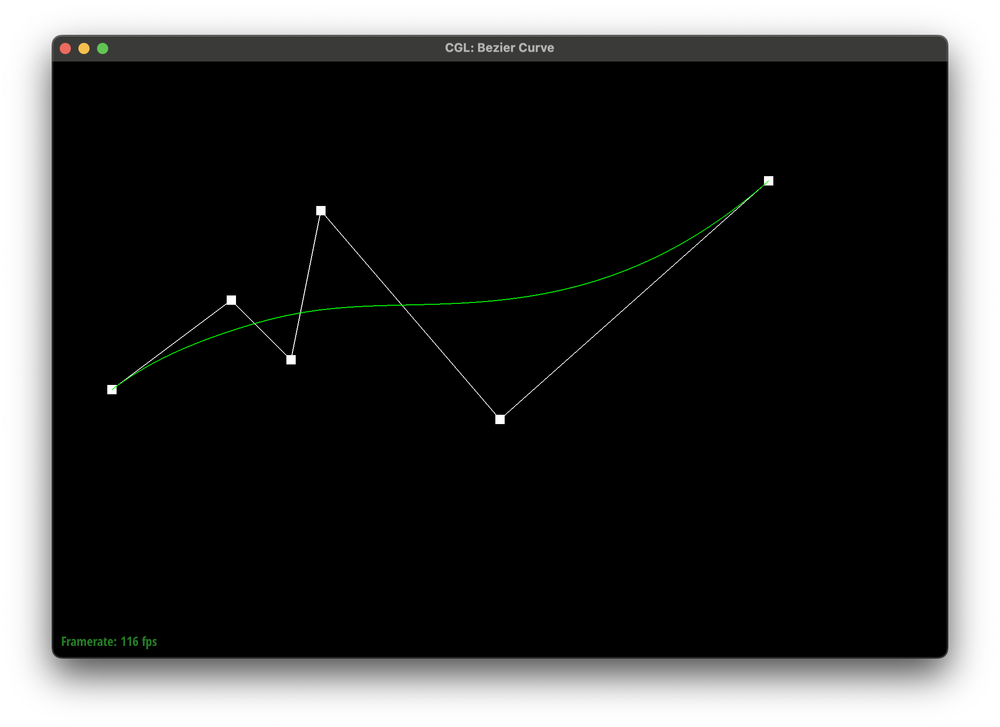 |
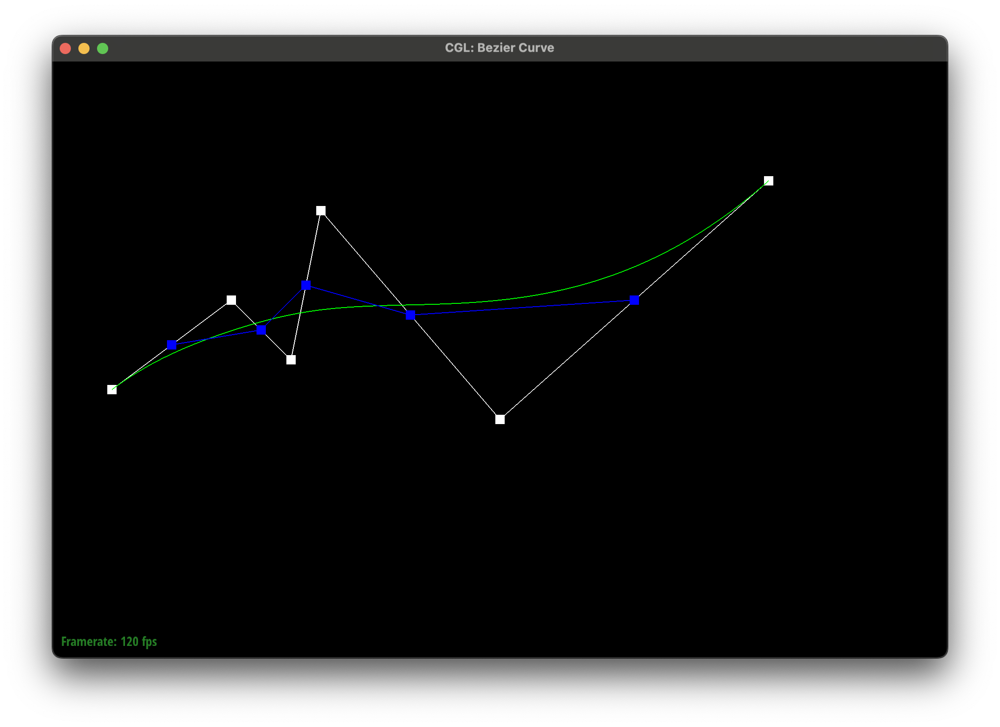 |
|
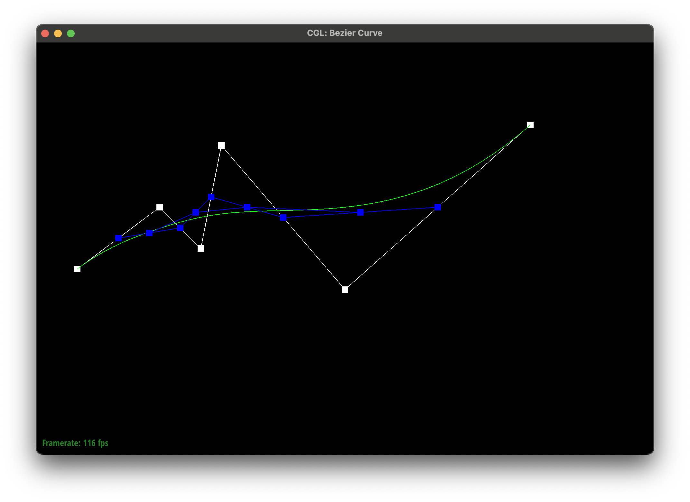 |
|
|
|
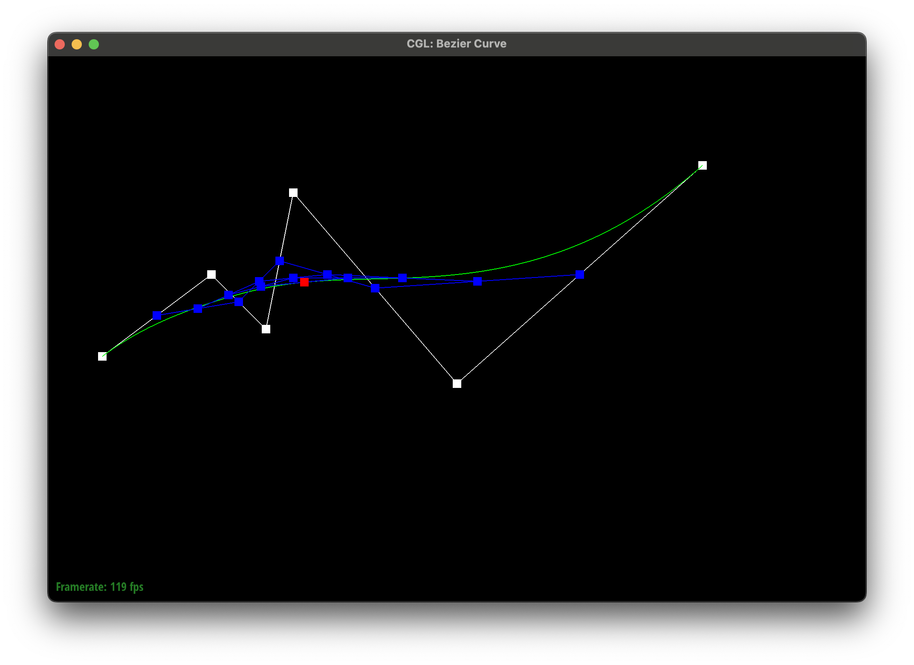 |
|
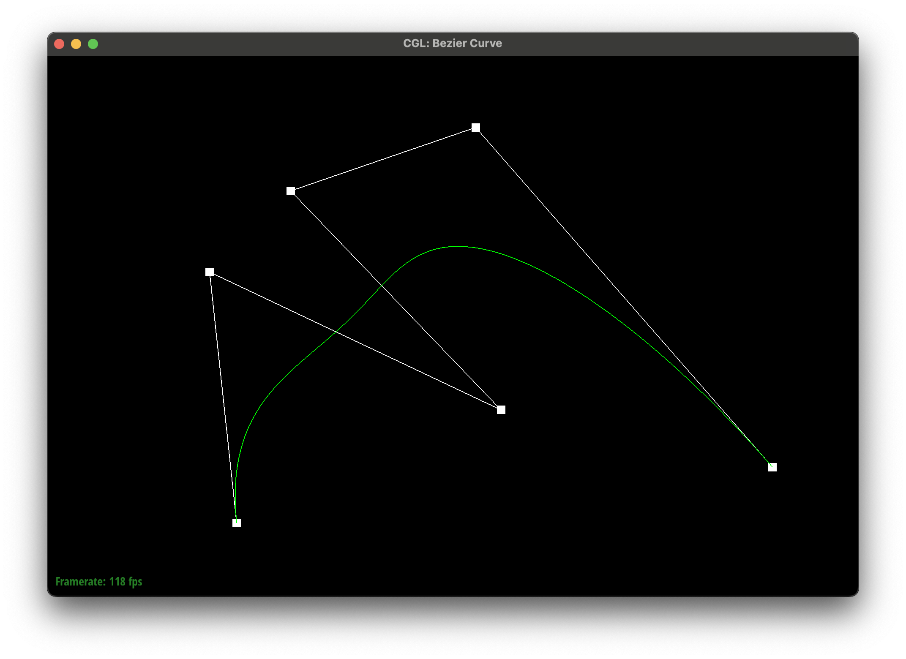 |
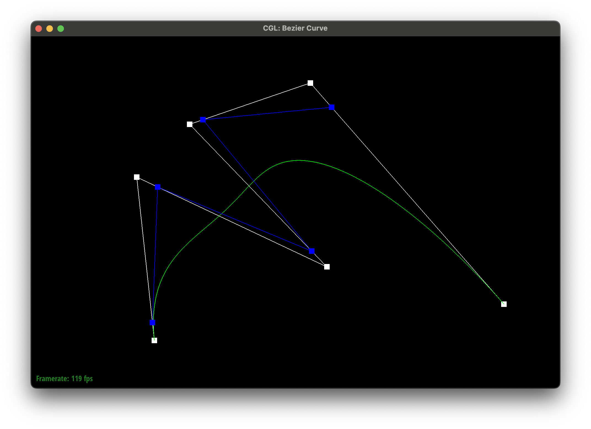 |
|
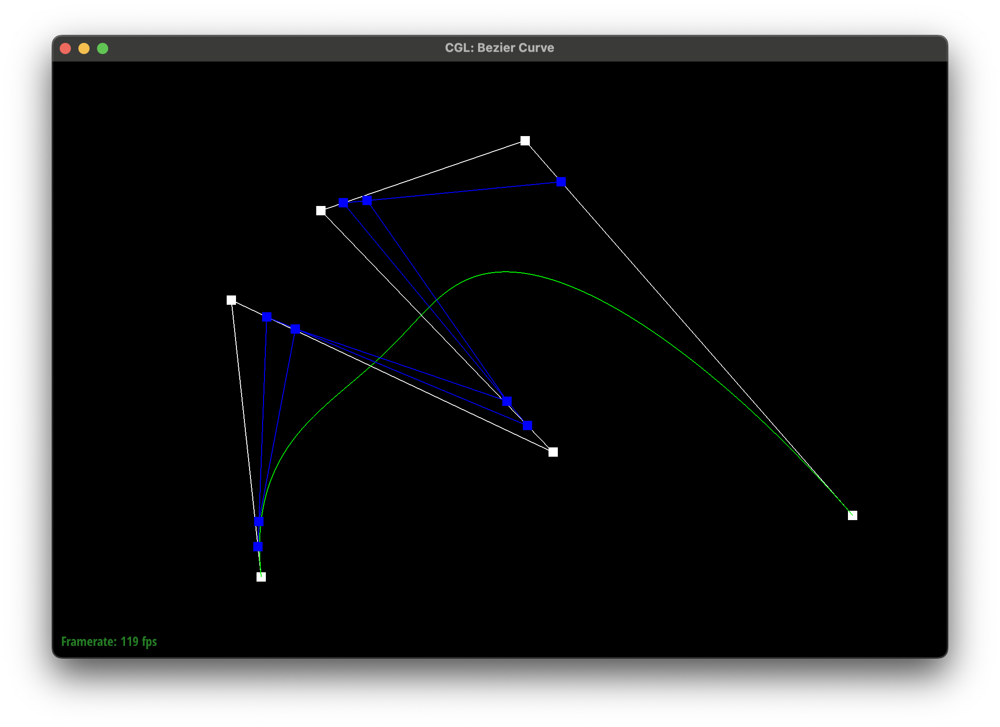 |
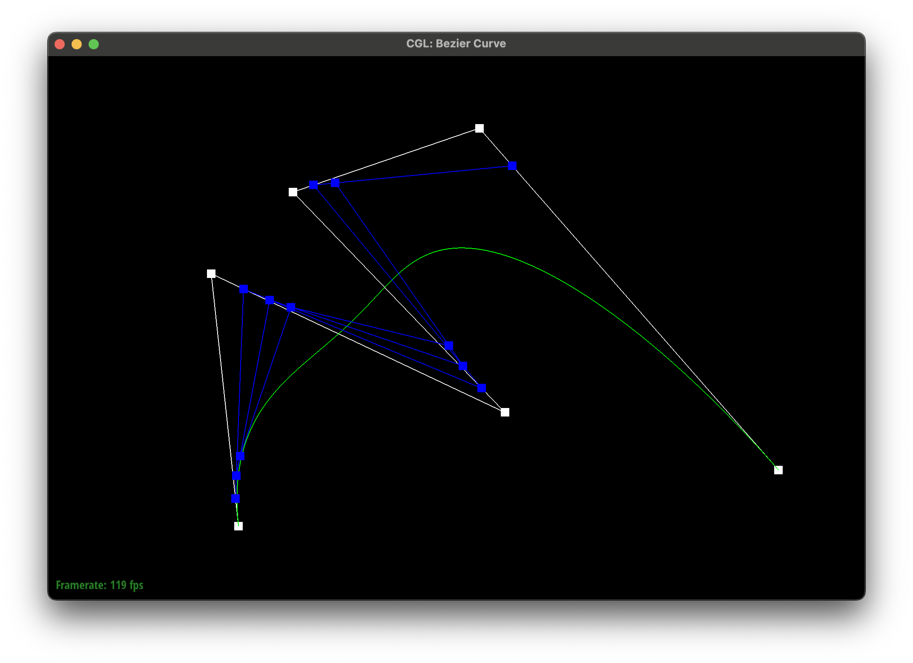 |
|
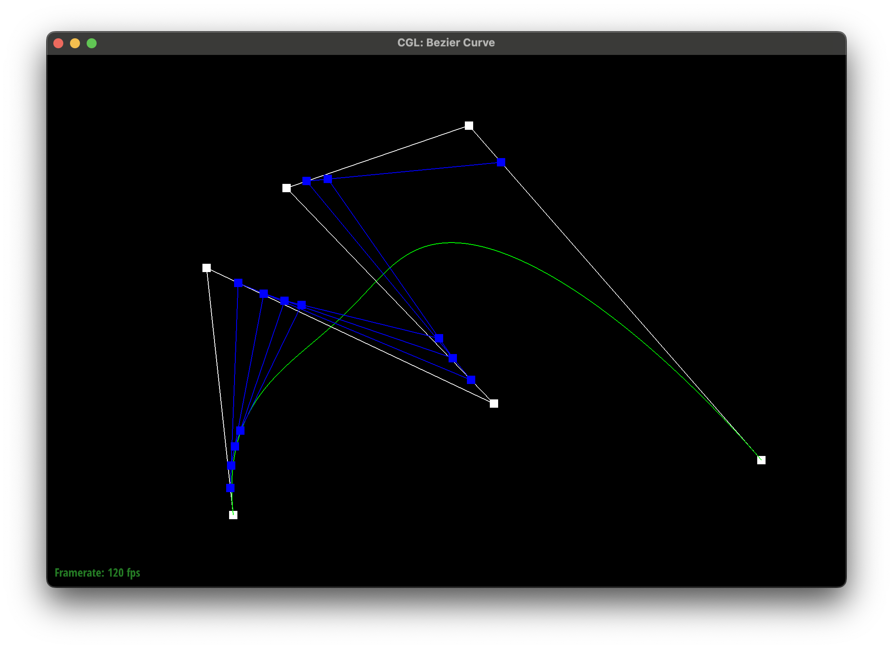 |
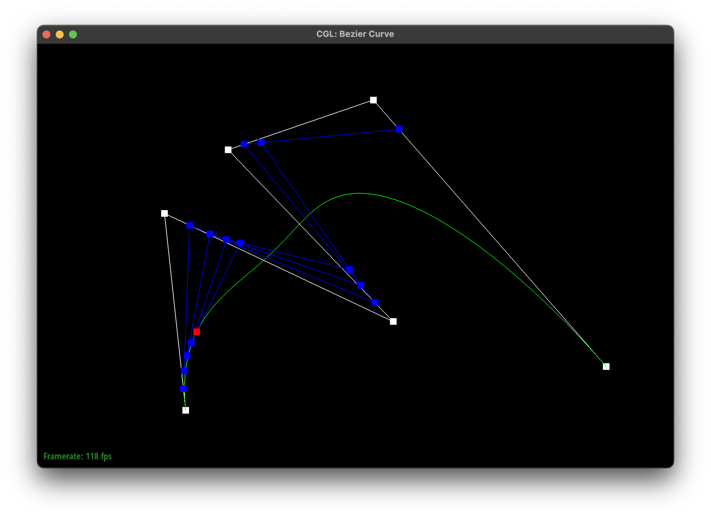 |
A 2D path of control points can be viewed as a set of 1D vectors of points, where each row corresponds to a vector of points. Casteljau's algorithm can be extended from 1D curves to 2D curves by being applied to each row to get a bezier curve point for each row, and then treating them as control points for the second application of the algorithm across rows. For my implementation, I run Casteljau's algorithm itertatively on each row of points until only one point remains, and then take that one point from each row and run Casteljau's algorithm iteratively on those points until one point on the bezier surface is found.
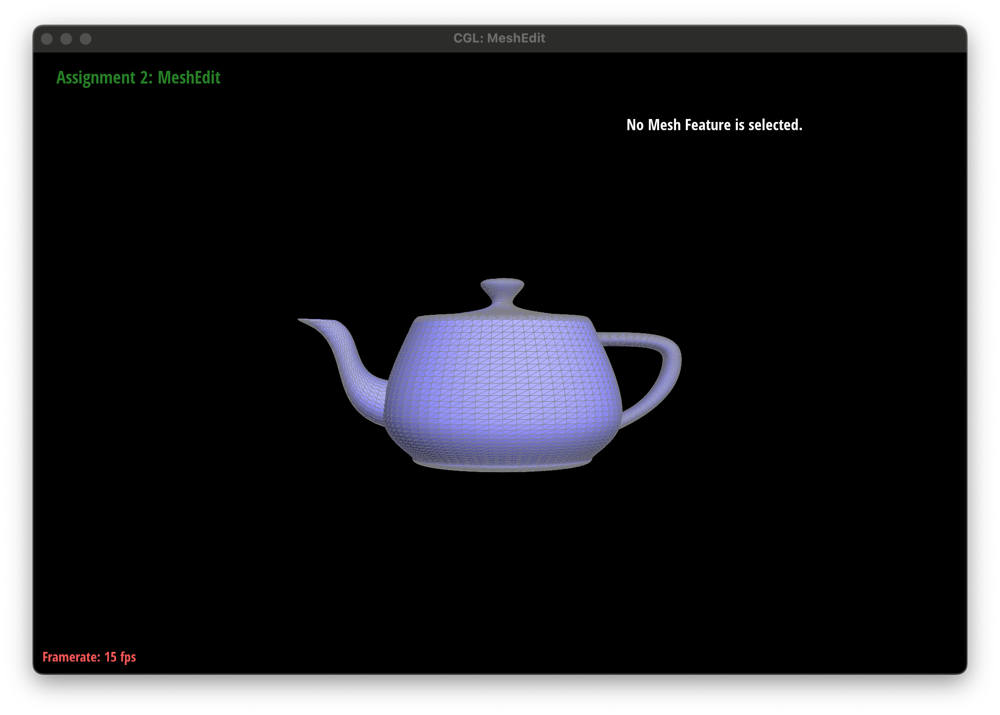
To get an area-weighted normal for a vertex, I iterated
over each face adjacent to the vertex and added their area-weighted
normals, then scaled the resulting vector to be a unit vector. This
approach is similar to the approach used for computing face normals
in the given code. To iterate
over faces, I started with a halfedge adjacent to each face whose source
is the vertex we are computing the normal for. After an iteration, I used
twin->next, as suggested in the halfedge guide, to move to a halfedge on the
next face in a clockwise order, pointing at a halfedge that still has its source
at the vertex of interest.
For each face, I found two other points on the face, which when combined with the
vertex of interest, form a triangle. I used twin->vertex and next->twin->vertex to get
these vertices, since the halfedges' vertex attribute is the source vertex, so I called
twin to get their destination vertices. I then subtracted the original vertex's position
from each of those vertices' positions to get two vectors representing two sides of the
triangle, and took their cross product to get a normal vector scaled to the area of the
triangle.
For edge flips, I tried to keep twin pairs of halfedges the same, so
no twin pointers were changed. Since I was finding HalfedgeElement objects
through traversing through halfedges, I modified the non-halfedge objects
before the halfedges for simplicity.
The two vertices adjacent to the current edge may point to a halfedge
that is changed in the flip, so I manually assigned them to a different
halfedge, the one from twin->next. I chose to have the halfedges on the
flipped edge keep their face. In the context of the example, the face
ACB is mapped to ACD, and BCD is mapped to ABD. Similar to vertices, I
picked a different halfedge that face is adjacent to assign so that
the face doesn't point to an invalid halfedge.
For the halfedges not on the current halfedge, their next and face pointers
may need to be modified. The only halfedges that need to be modified are
on the interior of the quadrilateral since nothing changes for the halfedges
on the exterior. Since I'm using halfedges to find other halfedgeElements,
I stored relevant objects as local variables before reassigning halfedge pointers.
Afterwards, I changed the pointers on the halfedges on the edge being flipped.
I did not need to debug my implementation. During coding, I did realize a lot of my logic was based on the halfedge structure before flipping, so I had to store relevant objects as local variables before modifying halfedge pointers.
For edge splitting, I first created the new halfedgeElements,
and assigned pointers for the new vertex, all interior edges,
and all interior faces. Before modifying any pointers, I
store all relevant halfedgeElement objects as local
variables, and don't call next() once assignment starts.
For modifying halfedges, I started by modifying interior
half edges, and leaving the halfedges at the exterior of the
quadrilateral unchanged for consistent behavior. This way, I had
unchanged halfedges whose pointers I could use for assigning pointers
for the interior halfedges. Similarly, when I reassigned pointers
to the exterior halfedges at the end, I could reliably use the
pointers on hte halfedges in the interior of the quadrilateral.
One useful design decision for me was to consistently label local variables.
I labeled f0, f1, f2, and f3 as faces in counter-clockwise order, and names by
edges and halfedges in a similar manner. This made it easy to catch patterns
in the assignment of pointers.
My implementation originally had many holes, because I was calling next() extensively in the middle of reassignment. I changed my code to store every relevant object as a local variable before pointer reassignment, and it fixed the issue of holes appearing.
I implemented my upsampling procedure similarly to how it was described in the spec. I first iterated over all existing vertices to precompute their new positions, and do the same for edges. When iterating over these edges, I build a copy of the list of edges as a std::vector so that I can iterate over them at the next step. Afterwards, I iterate over all the old edges and call split on them, and assign the position of the new vertex based on the current edge's newPosition field. This is done at this step instead of at the end because it is easy to associate a new vertex with the edge it was added to. Then, I flip all new edges connecting a new and old vertex, and assign new positions to the old vertices.
I initally tried one iteration of loop subdivision on the teapot mesh, as shown below. I found that there are sharp edges and many rectangles when subdividing the original mesh. I tried splitting an edge before subdividing, and found the area around that split was more round after the subdivision, so pre-processing can result in smoother looking meshes after subdivision.
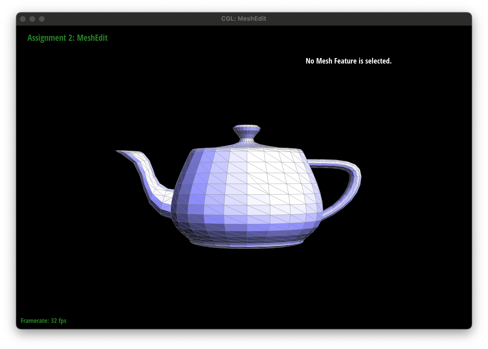
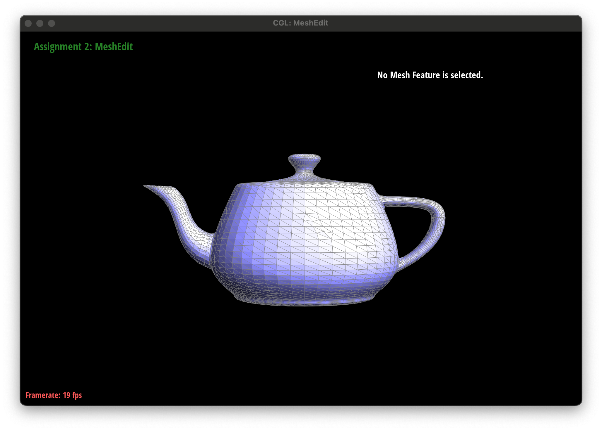
I ran 4 iterations of loop subdivision on the cube as well. I found that over time, the cube would have more mass in certain corners compared to others, losing its symmetry. This occurs because each face on the original mesh has one diagonal, two vertices on each face have higher degree than the others. This resulted in them being weighted more towards the center of the cube due to fewer neighbors, while the vertices with lower degree were not weighted toward the center as much. This is shown below.
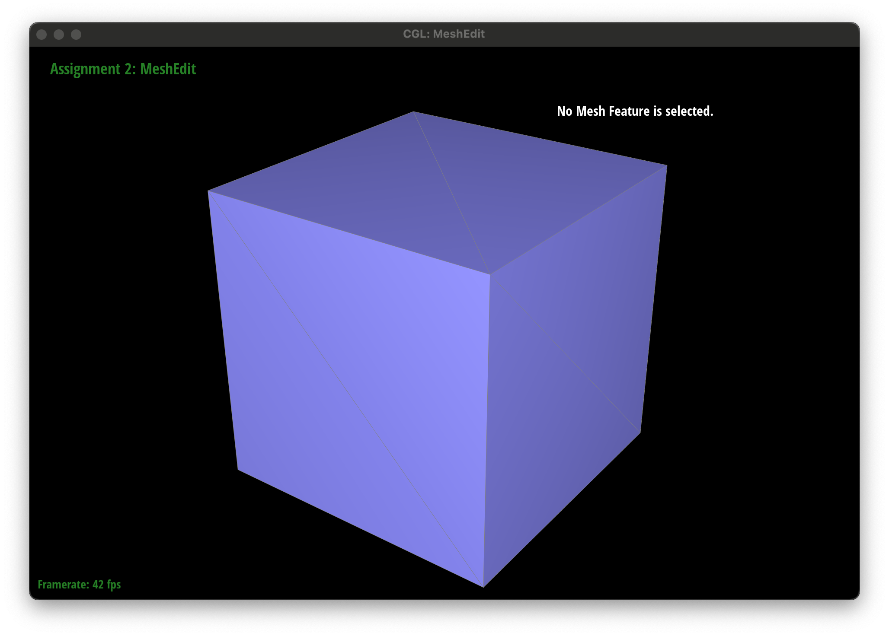
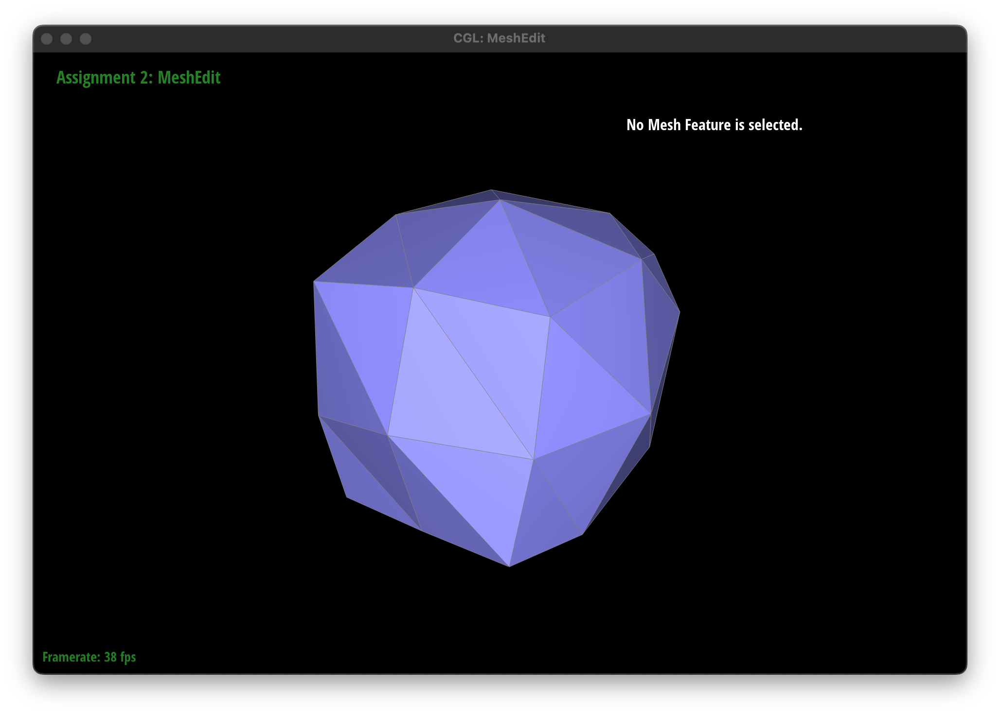
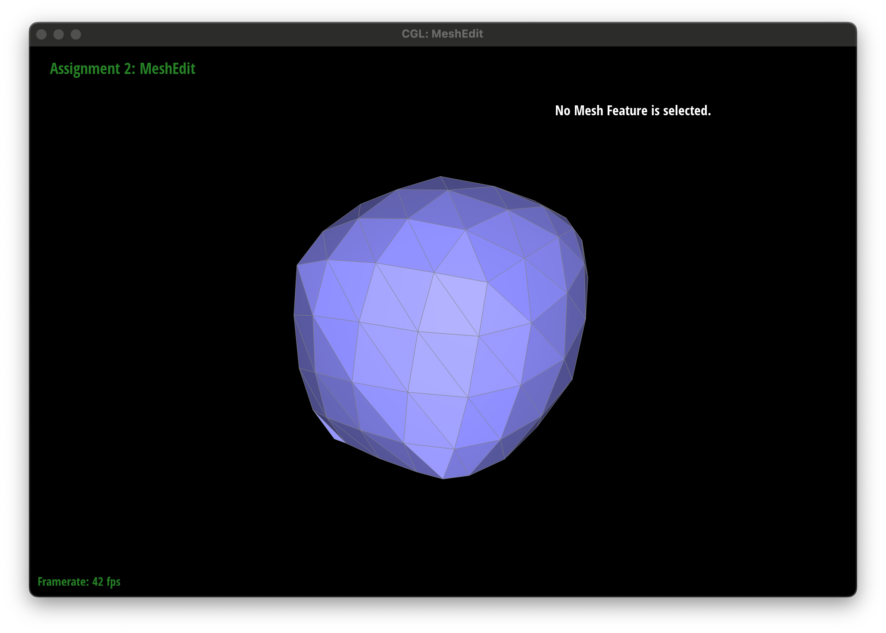
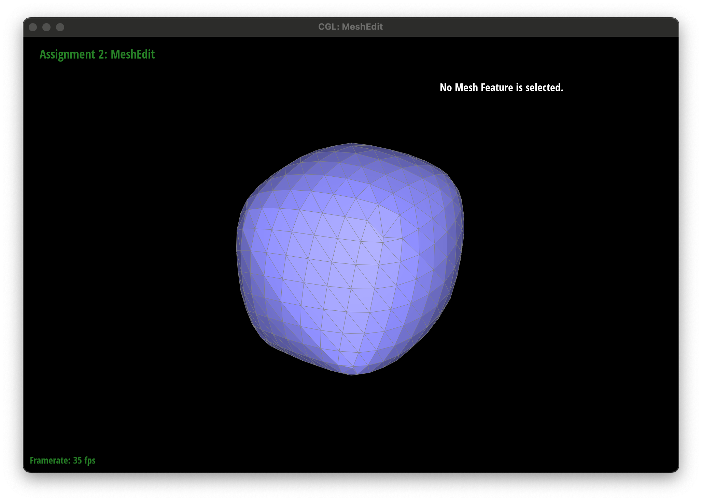
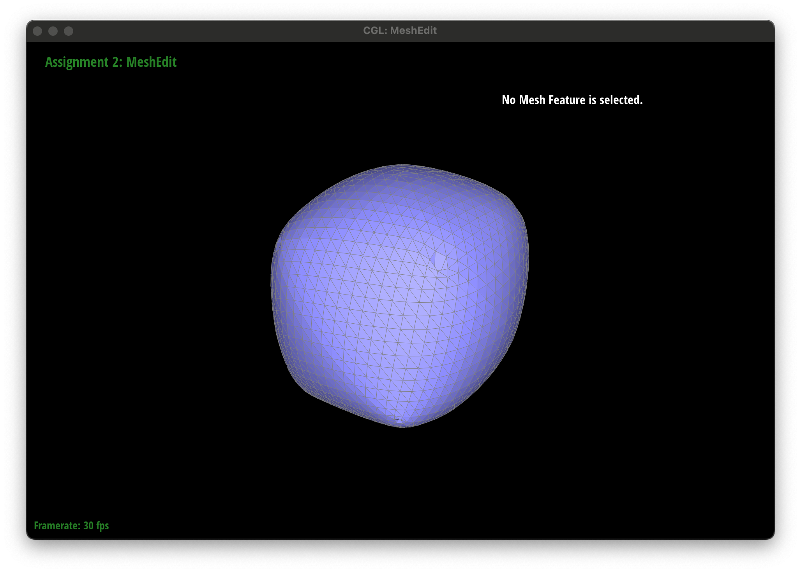
To fix this, I split the diagonal on each face of the cube so each vertex is now adjacent to a diagonal on the face. The result was more symmetrical, as shown below. Note that the corners were still pulled inward from a high degree, but they are all symmetric to each other now.
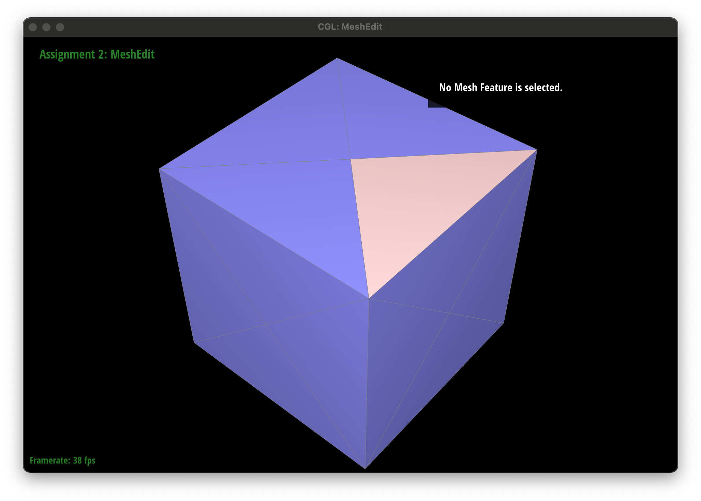
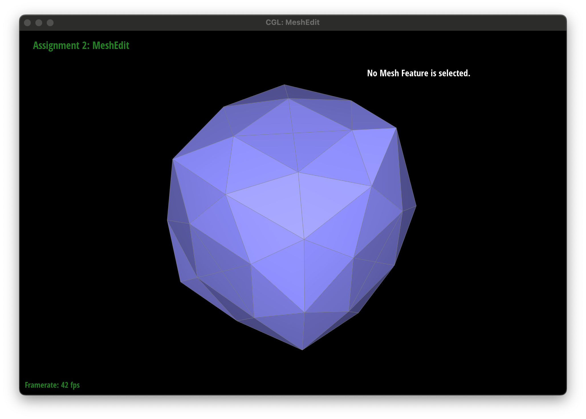
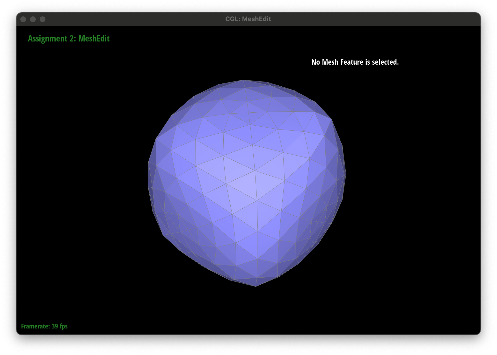
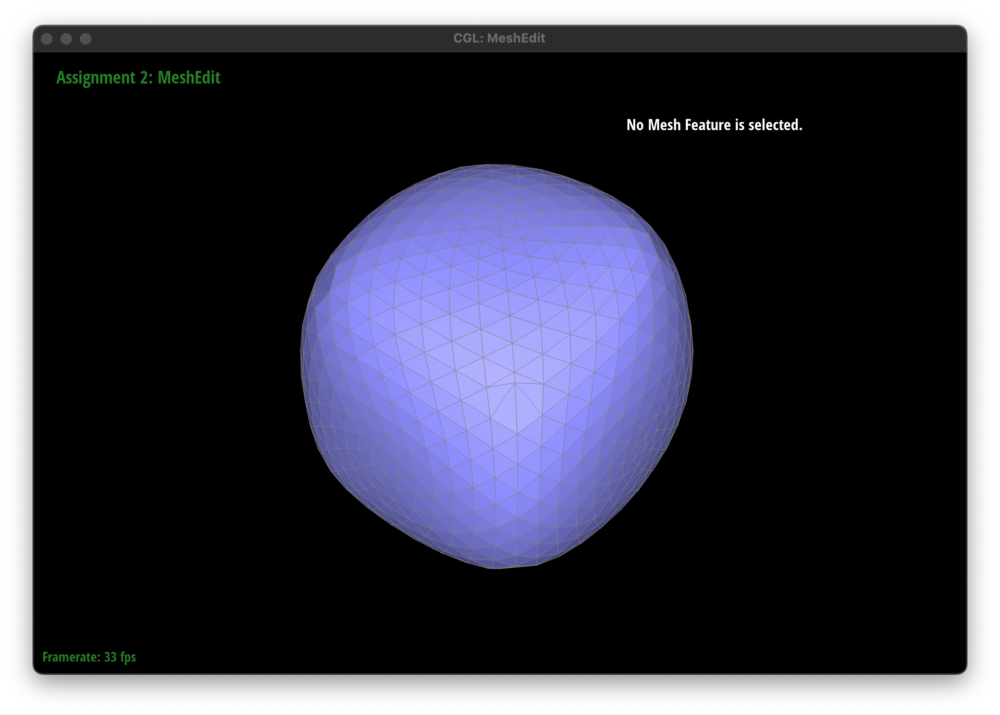
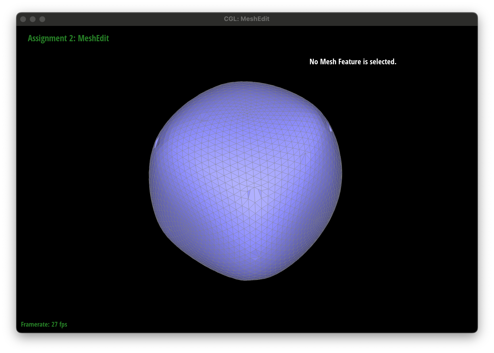